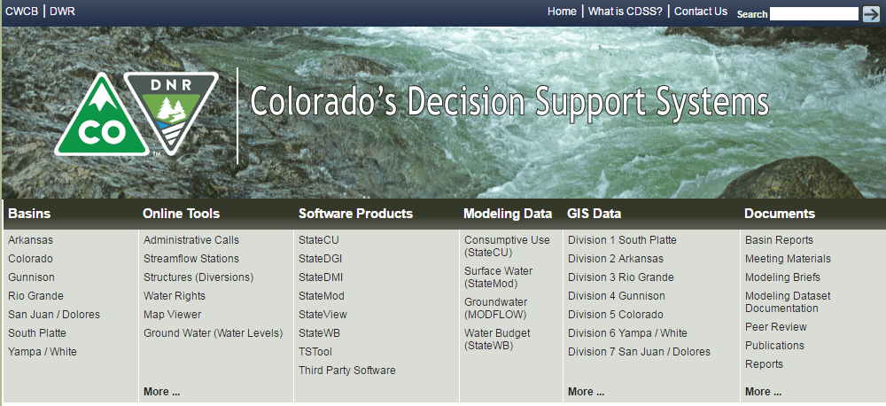

StateMod User Documenation
This documentation is the user manual for Colorado's Decision Support Systems (CDSS) StateMod water allocation model software.
This documentation is a work in progress, with the initial online version including references to the existing PDF format and examples to illustrate use of online documentation features.
This documentation page includes the following sections:
- How to Use this Documentation - guidance and list of main documentation sections
- Colorado's Decision Support Systems - the system under which the software is maintained
- Open Water Foundation - lead organization for moving StateMod to open source project
- License - license for software and this documentation
- Source Repository on GitHub - location of StateMod repository in GitHub
How to Use this Documentation
This documentation is the user documentation for the StateMod software and currently consists of the legacy Word/PDF documentation. The legacy documentation may be converted to online navigable form.
The legacy PDF documents are referenced from web pages for each section of the user documentation, using the original chapter numbers.
Colorado's Decision Support Systems
Colorado's Decision Support Systems (CDSS, cdss.state.co.us) has been developed to answer important questions about Colorado's water resources. CDSS efforts are led by the Colorado Water Conservation Board (CWCB) and Colorado Division of Water Resources (DWR).

One component of CDSS is the StateMod water allocation model, which estimates water allocation given water supply and demand and physical and legal (water right) constraints on water decisions. StateMod results are linked to the StateCU consumptive use model and in some basins the MODFLOW groundwater model.
In late 2016, the Open Water Foundation began the effort to move StateMod and other CDSS software to open source licensing and establish open source software projects, referred to as "OpenCDSS", and this documentation is one project outcome.
Open Water Foundation
The Open Water Foundation (OWF, openwaterfoundation.org) is a nonprofit social enterprise that focuses on developing and supporting open source software to make better decisions about water resources. OWF is providing technical resources and management to transition StateMod and other CDSS software to sustainable open source software projects.
See also other OWF learning resources.
License
The license for this documentation is being determined in the CDSS open source project. More information will be provided later.
Source Repository on GitHub
The source files for this documentation are maintained in the public GitHub repository for StateMod: cdss-app-statemod-fortran-doc-user. Documentation website files currently are copied to the Open Water Foundation Learn StateMod website, and will be copied to an OpenCDSS website once software tools are made available publicly.
Release Notes
Release notes for StateMod and this documentation will be implemented as the open source migration is finalized.